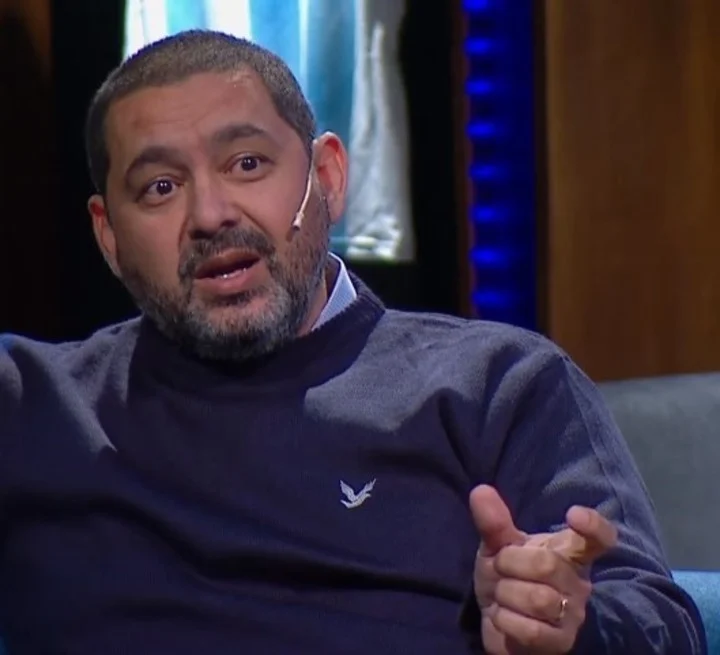

El ex jugador de Boca estalló tras el escándalo con Almendra y fue contundente con su opinión sobre las declaraciones del Pipa
El escándalo entre Sebastián Battaglia y Agustín Almendra, además de la sanción para Alan Varela y las durísimas declaraciones de Benedetto, sigue sumando capítulos. Esto hizo que el Mundo Boca se convulsionara, al punto de que lo que dijo Pipa Benedetto generó debate entre los hinchas y ex jugadores. Y uno de los que opinó al respecto fue Cristian Traverso. Y le pegó duro al goleador.
“Yo sé que voy a quedar como un antipático con muchos, porque cuando uno dice algo en contra de los referentes del plantel no gusta. Pero a mí no me gustó lo que dijo Benedetto, el problema fue entre Almendra y Battaglia y lo deben solucionar entre ellos”, comenzó diciendo el ex jugador en el programa de TyC Sports en el cual es panelista.
El goleador salió a hablar el día después que Almendra reaccionara durante la práctica de fútbol, luego de insultar a un compañero y tener un durísimo cruce con Battaglia. "A vos te manejan, como jugador ganaste todo pero como técnico sos un desastre", le tiró el volante al DT, que lo echó de la práctica, lo bajó a Reserva y avisó que mientras él sea el entrenador, no jugará más. "Son cosas que a la larga iban a pasar, es algo que no se aguantaba más. El plantel piensa igual que el cuerpo técnico, bancamos a muerte la decisión del entrenador y del Consejo. Hay cosas que sobrepasan el límite. Esto había que sacarlo de raíz y se sacó de raíz", arrancó Pipa.
El volante, colgado por Battaglia, sabe que después de la frase de Benedetto tampoco jugará cualquiera sea el DT de Boca. Por eso, buscará salir...
"Yo sé que no voy a jugar más. Igual, ya no venía jugando, así que...". Una de las últimas frases de Agustín Almendra, antes de irse del predio de Ezeiza echado por Battaglia del entrenamiento, mostró qué pensaba el jugador de su situación en Boca. Por entonces, ya tenía claro que sería separado del plantel y que no tendría más oportunidades con el entrenador.
Lo que no sabía, claro, es lo que vendría luego: las durísimas declaraciones de Benedetto, planteando además que "el grupo está muy contento con la decisión del DT". Por todo, el volante sabe que hoy no le queda otra que salir del club. Y por eso su idea es plantearle al Consejo (y especialmente a Riquelme, quien él mismo dijo que lo ayudó mucho cuando quiso dejar de jugar), que lo dejen irse de Boca.
Recibiras novedades diarias.